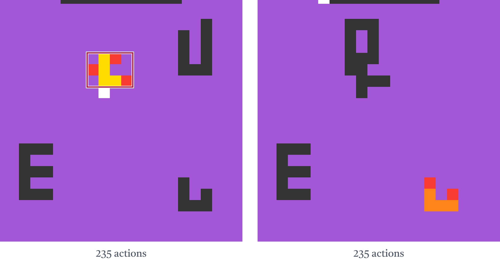

Program induction makes beliefs explicit and reusable.
CN04 · Level 5

Pieces grow, rotate, and connect under changing geometric constraints. Schema completes the full level in 279 actions versus 1,219 with a prose model. The pauses highlight the same piece before and after growth.